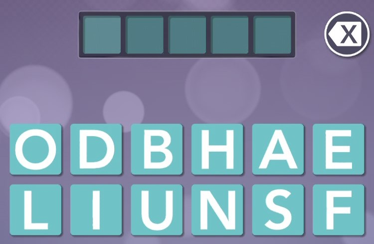
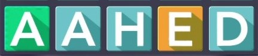
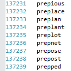
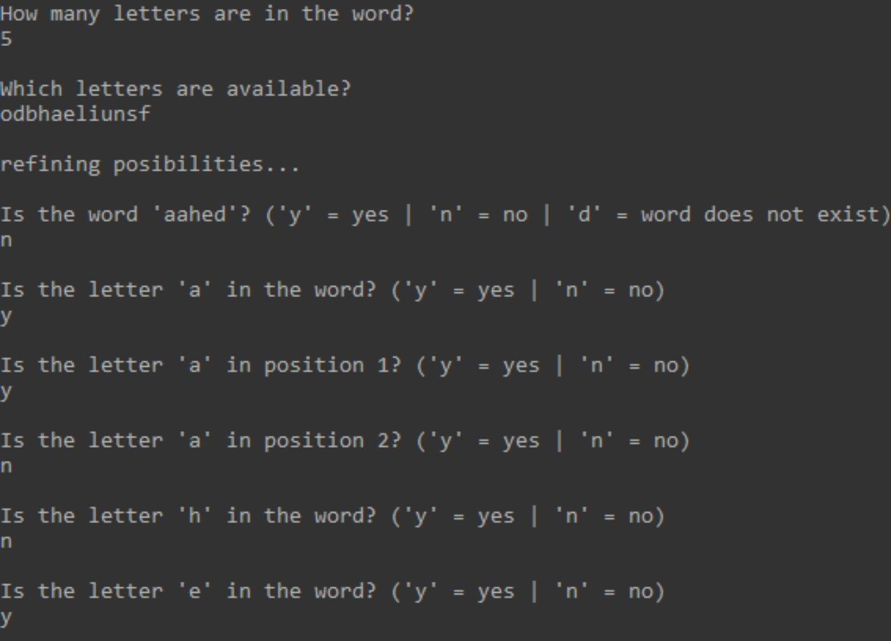
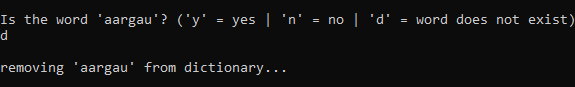

This is an AI that plays the mobile game Word Bound. Using the clues given by the game, the AI can guess the hidden word.
Before explaining how the bot works, you must understand how the game works. Word Bound is a mobile game all about trying to guess a code word using limited clues. At the beginning of the game, you're given the length of the word as well as a group of letters that could potentially appear in the word.
Using the letters given, you make guesses as to what the code word could be. You'll then be told either you guessed correctly, your guess is not a valid word, or you'll be given clues based on the word you guessed. The letters of the word you guessed will appear as one of three different colors: blue, yellow, or green. Green letters are in the correct position. Yellow letters are in the code word, but not in the same position as in the word you guessed. Blue letters are not in the code word.
Note: If a letter appears multiple times in the guessed word, this rule also applies to that letter: If every occurrence of the letter is blue, the letter does not exist in the code word, otherwise, every occurrence of the letter that is blue should be treated as if it was yellow.
Now that the game has been explained, let's move on to how the AI works. It will first ask the user for the length of the word and what the available letters are. It will then generate a list of possible code words from a list of a few hundred thousand English words with the same length as the code word, ignoring any word that contains a letter that is not available.
After the starting information is given, the AI will make a guess. If the guess is not correct, it will then ask a series of questions for the user to answer based on the clues given by the game. One of two questions will be asked: Is the letter _ in the word? or Is the letter _ in position _?
Along with the list of possible code words, the AI keeps track of two other things: what letters must be included in the code word and the possible letters that could be in each position. The AI will refine this information based on how the user answers its questions. If a letter is not in the code word, all words containing that letter are removed from the list of possible code words. If a letter is in the code word, all words not containing that letter are removed from the list of possible code words. If a letter is not in the correct position, all words that have that letter in that position are removed from the list of possible code words. If a letter is in the correct position, all words that do not have the letter in that position are removed from the list of possible code words. These refinements are made over and over until the end of the game.
An important thing to note is that the master list of words that the AI uses is in no way related to the game itself. This means that sometimes, the AI will make a guess which the game does not consider to be a word. In this case, the AI will remove the word from the master list so that the word cannot be used in the future.
This project in its current state is what I consider to be version 2. This version improved upon version 1 in a few ways. Firstly, version 1 frequently asked redundant questions. Even if the user already told it that a particular letter was in the code word, if the AI guessed a word containing that letter, it would still ask if the letter was in the code word. This problem was solved by keeping track of the possible letters for each position in the code word. The AI will now check that information to see if a particular question needs to be asked; this is something version 1 did not do.
Secondly, version 1 did not prune the master list. If the AI guessed a word that the game did not recognize as a word, version 1 would simply guess a different word. This means that the AI could still potentially guess that word in a different level of the game. Version 2 takes care of this issue by removing the unrecognized word from the master list.
Lastly, some other minor/specific changes were made. Version 1 was written in Java because, at the time, that was the language I knew the best by a lot. Version 2 was written in c++ both because I am now better with c++ than Java and because c++ is better suited for this project. Version 1 stored nearly all of the important information as arrays. However, most of the utilization of this information involves simply checking if a letter exists within the array. This means that the order of the elements in the array does not matter and that version 1 was spending unnecessary time searching through these arrays. For this reason, version 2 stores this information as unordered sets, which makes it significantly easier to check if the set contains a certain element.
I do not have plans to come back to this project, but there are some things that I'd like to improve if I do come back. In its current state (version 2), the program will end when the level is complete, whether it guessed the code word or it ran out of guesses. I'd like to add a 'play again' feature so that the program does not need to be run again if the user wants to continue to play.
As far as the AI goes, there is still one aspect that I think could be majorly improved. In version 2, when the AI makes a guess, it simply chooses the top word from the list of possible code words (which is almost always in alphabetical order). In version 3, I'd like to add some decision-making to this part. I want the AI to be pickier when guessing to gain more information from the potential clues. For example, on the first guess, it's usually less beneficial to guess a word with multiple occurrences of the same letter. This is because you can only gain so much information about a particular letter, and that position could have been used to gain information about a letter with less known information. Version 2 usually can correctly guess the code word in 3-4 guesses. This number could be brought down if the AI makes better guesses. This is not a simple task, however, and there are many different ways to approach the problem. This is why I did not include it in version 2, but I'd like to include it in version 3.